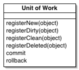

Unit of Work (Единица работы)

Паттерн проектирования Unit of Work
Описание Unit of Work
Обслуживает набор объектов, изменяемых в бизнес-транзакции (бизнес-действии) и управляет записью изменений и разрешением проблем конкуренции данных.
Когда необходимо писать и читать из БД, важно следить за тем, что вы изменили и если не изменили - не записывать данные в БД. Также необходимо вставлять данные о новых объектах и удалять данные о старых.
Можно записывать в БД каждое изменение объекта, но это приведёт к большому количеству мелких запросов к БД, что закончится замедлением работы приложения. Более того, это требует держать открытую транзакцию всё время работы приложения, что непрактично, если приложение обрабатывает несколько запросов одновременно. Ситуация ещё хуже, если необходимо следить за чтением из и БД, чтобы избежать неконсистентного чтения.
Реализация паттерна Unit of Work следит за всеми действиями приложения, которые могут изменить БД в рамках одного бизнес-действия. Когда бизнес-действие завершается, Unit of Work выявляет все изменения и вносит их в БД.
Примеры реализации
// Unit of Work Pattern in JavaScript
class UnitOfWork {
constructor() {
this.newObjects = new Set();
this.dirtyObjects = new Set();
this.removedObjects = new Set();
}
registerNew(obj) {
this.newObjects.add(obj);
}
registerDirty(obj) {
if (!this.newObjects.has(obj)) {
this.dirtyObjects.add(obj);
}
}
registerRemoved(obj) {
this.removedObjects.add(obj);
this.newObjects.delete(obj);
this.dirtyObjects.delete(obj);
}
commit() {
// Insert new objects
for (const obj of this.newObjects) {
this.insert(obj);
}
// Update dirty objects
for (const obj of this.dirtyObjects) {
this.update(obj);
}
// Delete removed objects
for (const obj of this.removedObjects) {
this.delete(obj);
}
this.clear();
}
insert(obj) {
console.log(`Inserting: ${obj.constructor.name}`);
}
update(obj) {
console.log(`Updating: ${obj.constructor.name}`);
}
delete(obj) {
console.log(`Deleting: ${obj.constructor.name}`);
}
clear() {
this.newObjects.clear();
this.dirtyObjects.clear();
this.removedObjects.clear();
}
}
// Usage
const uow = new UnitOfWork();
const user = new User(1, 'John', 'john@example.com');
uow.registerNew(user);
uow.commit();// Unit of Work Pattern in C++
#include <iostream>
#include <set>
#include <memory>
class UnitOfWork {
private:
std::set<void*> newObjects;
std::set<void*> dirtyObjects;
std::set<void*> removedObjects;
public:
void registerNew(void* obj) {
newObjects.insert(obj);
}
void registerDirty(void* obj) {
if (newObjects.find(obj) == newObjects.end()) {
dirtyObjects.insert(obj);
}
}
void registerRemoved(void* obj) {
removedObjects.insert(obj);
newObjects.erase(obj);
dirtyObjects.erase(obj);
}
void commit() {
// Insert new objects
for (auto obj : newObjects) {
insert(obj);
}
// Update dirty objects
for (auto obj : dirtyObjects) {
update(obj);
}
// Delete removed objects
for (auto obj : removedObjects) {
remove(obj);
}
clear();
}
private:
void insert(void* obj) {
std::cout << "Inserting object" << std::endl;
}
void update(void* obj) {
std::cout << "Updating object" << std::endl;
}
void remove(void* obj) {
std::cout << "Removing object" << std::endl;
}
void clear() {
newObjects.clear();
dirtyObjects.clear();
removedObjects.clear();
}
};// Unit of Work Pattern in Go
package main
import "fmt"
type UnitOfWork struct {
newObjects map[interface{}]bool
dirtyObjects map[interface{}]bool
removedObjects map[interface{}]bool
}
func NewUnitOfWork() *UnitOfWork {
return &UnitOfWork{
newObjects: make(map[interface{}]bool),
dirtyObjects: make(map[interface{}]bool),
removedObjects: make(map[interface{}]bool),
}
}
func (uow *UnitOfWork) RegisterNew(obj interface{}) {
uow.newObjects[obj] = true
}
func (uow *UnitOfWork) RegisterDirty(obj interface{}) {
if !uow.newObjects[obj] {
uow.dirtyObjects[obj] = true
}
}
func (uow *UnitOfWork) RegisterRemoved(obj interface{}) {
uow.removedObjects[obj] = true
delete(uow.newObjects, obj)
delete(uow.dirtyObjects, obj)
}
func (uow *UnitOfWork) Commit() {
// Insert new objects
for obj := range uow.newObjects {
uow.insert(obj)
}
// Update dirty objects
for obj := range uow.dirtyObjects {
uow.update(obj)
}
// Delete removed objects
for obj := range uow.removedObjects {
uow.delete(obj)
}
uow.clear()
}
func (uow *UnitOfWork) insert(obj interface{}) {
fmt.Printf("Inserting: %T\n", obj)
}
func (uow *UnitOfWork) update(obj interface{}) {
fmt.Printf("Updating: %T\n", obj)
}
func (uow *UnitOfWork) delete(obj interface{}) {
fmt.Printf("Deleting: %T\n", obj)
}
func (uow *UnitOfWork) clear() {
uow.newObjects = make(map[interface{}]bool)
uow.dirtyObjects = make(map[interface{}]bool)
uow.removedObjects = make(map[interface{}]bool)
}# Unit of Work Pattern in Python
class UnitOfWork:
def __init__(self):
self.new_objects = set()
self.dirty_objects = set()
self.removed_objects = set()
def register_new(self, obj):
self.new_objects.add(obj)
def register_dirty(self, obj):
if obj not in self.new_objects:
self.dirty_objects.add(obj)
def register_removed(self, obj):
self.removed_objects.add(obj)
self.new_objects.discard(obj)
self.dirty_objects.discard(obj)
def commit(self):
# Insert new objects
for obj in self.new_objects:
self._insert(obj)
# Update dirty objects
for obj in self.dirty_objects:
self._update(obj)
# Delete removed objects
for obj in self.removed_objects:
self._delete(obj)
self._clear()
def _insert(self, obj):
print(f"Inserting: {type(obj).__name__}")
def _update(self, obj):
print(f"Updating: {type(obj).__name__}")
def _delete(self, obj):
print(f"Deleting: {type(obj).__name__}")
def _clear(self):
self.new_objects.clear()
self.dirty_objects.clear()
self.removed_objects.clear()
# Usage
if __name__ == "__main__":
uow = UnitOfWork()
user = User(1, "John", "john@example.com")
uow.register_new(user)
uow.commit()<?php
// Unit of Work Pattern in PHP
class UnitOfWork {
private $newObjects = [];
private $dirtyObjects = [];
private $removedObjects = [];
public function registerNew($obj) {
$this->newObjects[] = $obj;
}
public function registerDirty($obj) {
if (!in_array($obj, $this->newObjects)) {
$this->dirtyObjects[] = $obj;
}
}
public function registerRemoved($obj) {
$this->removedObjects[] = $obj;
$this->newObjects = array_filter($this->newObjects, function($item) use ($obj) {
return $item !== $obj;
});
$this->dirtyObjects = array_filter($this->dirtyObjects, function($item) use ($obj) {
return $item !== $obj;
});
}
public function commit() {
// Insert new objects
foreach ($this->newObjects as $obj) {
$this->insert($obj);
}
// Update dirty objects
foreach ($this->dirtyObjects as $obj) {
$this->update($obj);
}
// Delete removed objects
foreach ($this->removedObjects as $obj) {
$this->delete($obj);
}
$this->clear();
}
private function insert($obj) {
echo "Inserting: " . get_class($obj) . "\n";
}
private function update($obj) {
echo "Updating: " . get_class($obj) . "\n";
}
private function delete($obj) {
echo "Deleting: " . get_class($obj) . "\n";
}
private function clear() {
$this->newObjects = [];
$this->dirtyObjects = [];
$this->removedObjects = [];
}
}
// Usage
$uow = new UnitOfWork();
$user = new User(1, "John", "john@example.com");
$uow->registerNew($user);
$uow->commit();
?>Использована иллюстрация с сайта Мартина Фаулера